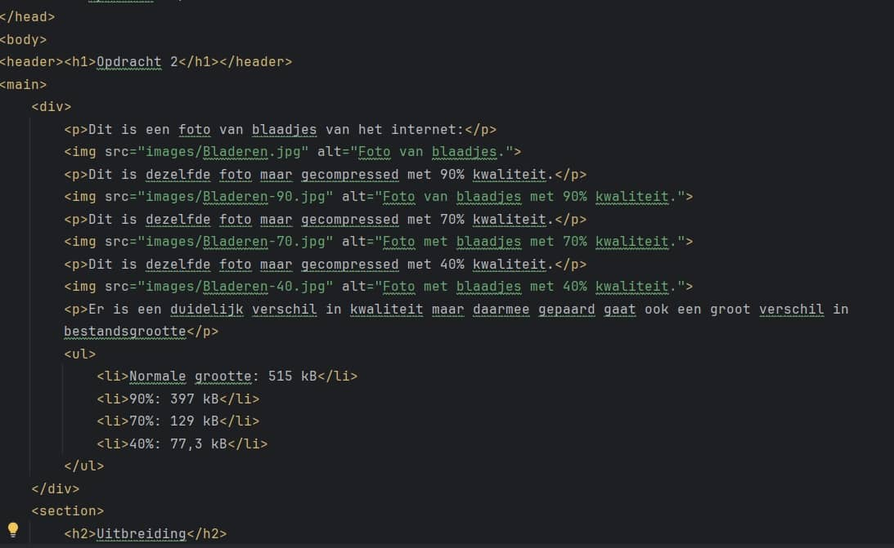
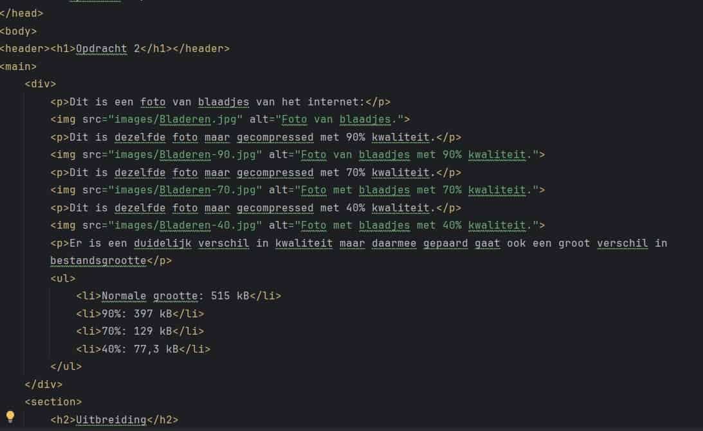

Dit is een foto van blaadjes van het internet:
Dit is dezelfde foto maar gecompressed met 90% kwaliteit.
Dit is dezelfde foto maar gecompressed met 70% kwaliteit.
Dit is dezelfde foto maar gecompressed met 40% kwaliteit.
Er is een duidelijk verschil in kwaliteit maar daarmee gepaard gaat ook een groot verschil in bestandsgrootte
- Normale grootte: 515 kB
- 90%: 397 kB
- 70%: 129 kB
- 40%: 77,3 kB
Uitbreiding
De originele foto van tekst in webstorm:
Dit is dezelfde foto maar gecompressed met 70% kwaliteit.
Dit is dezelfde foto maar gecompressed met 40% kwaliteit.
De tekst is beduidend waziger op de 40% dan de originele foto.